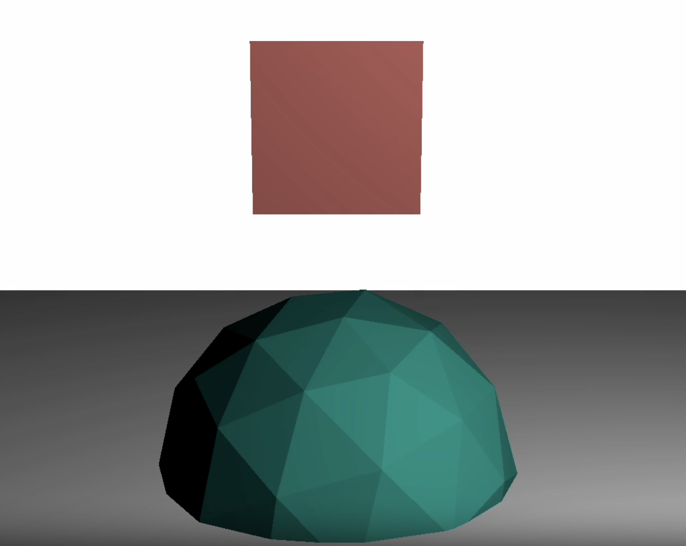
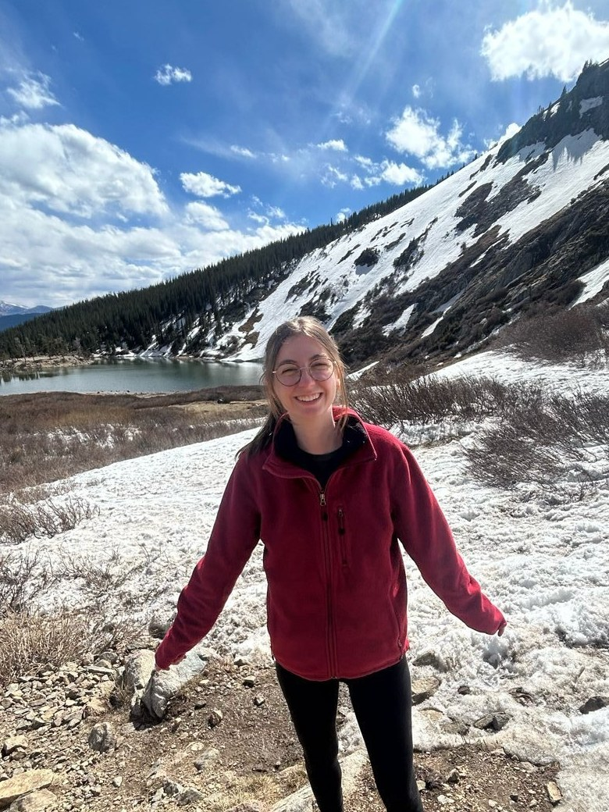
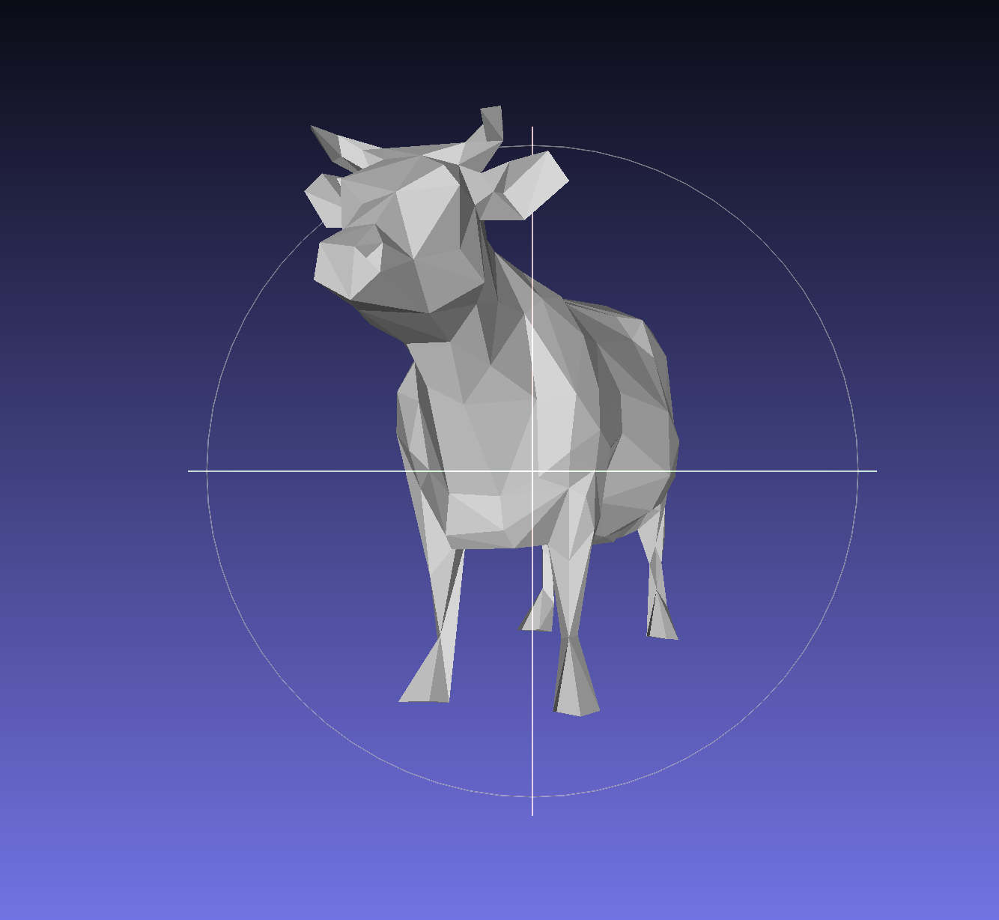
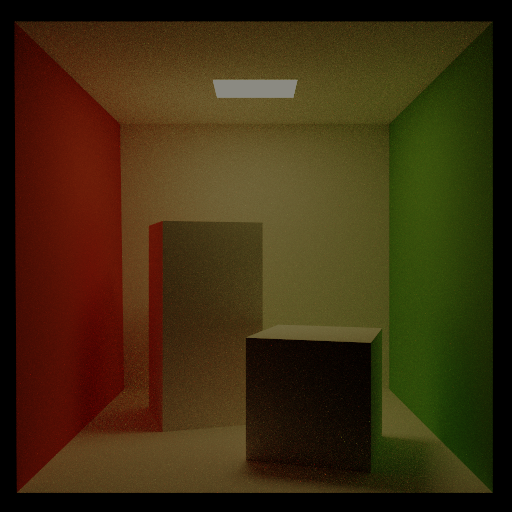
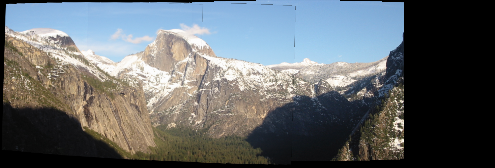
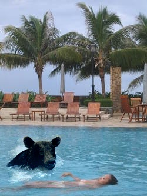
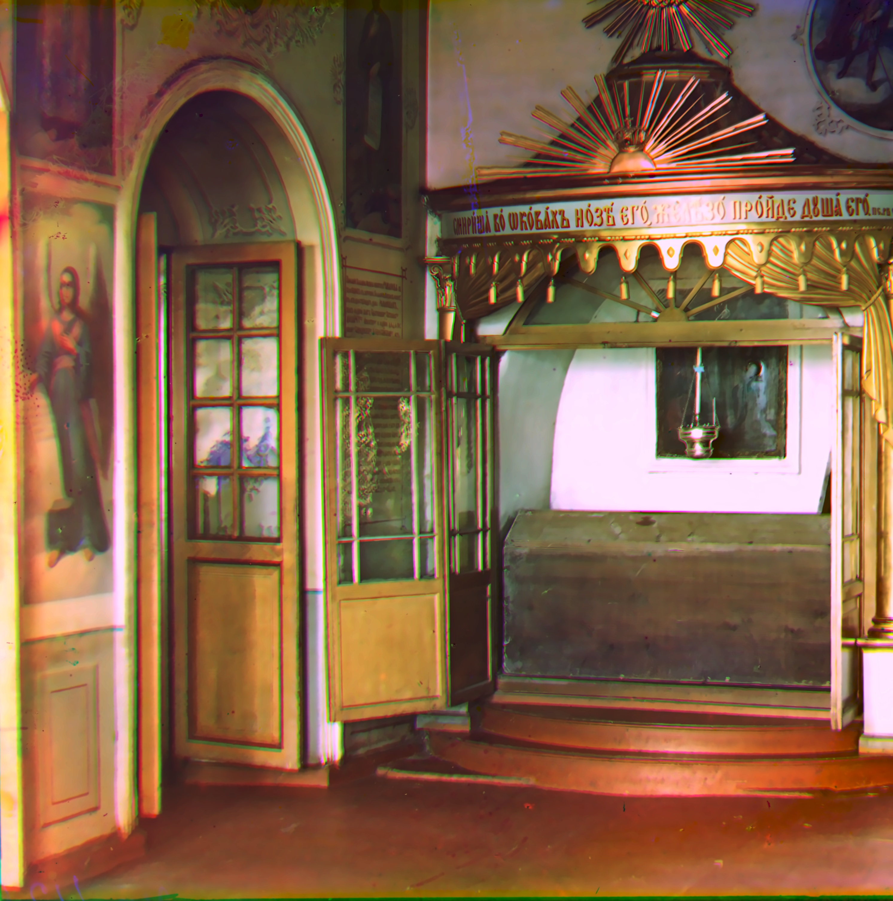
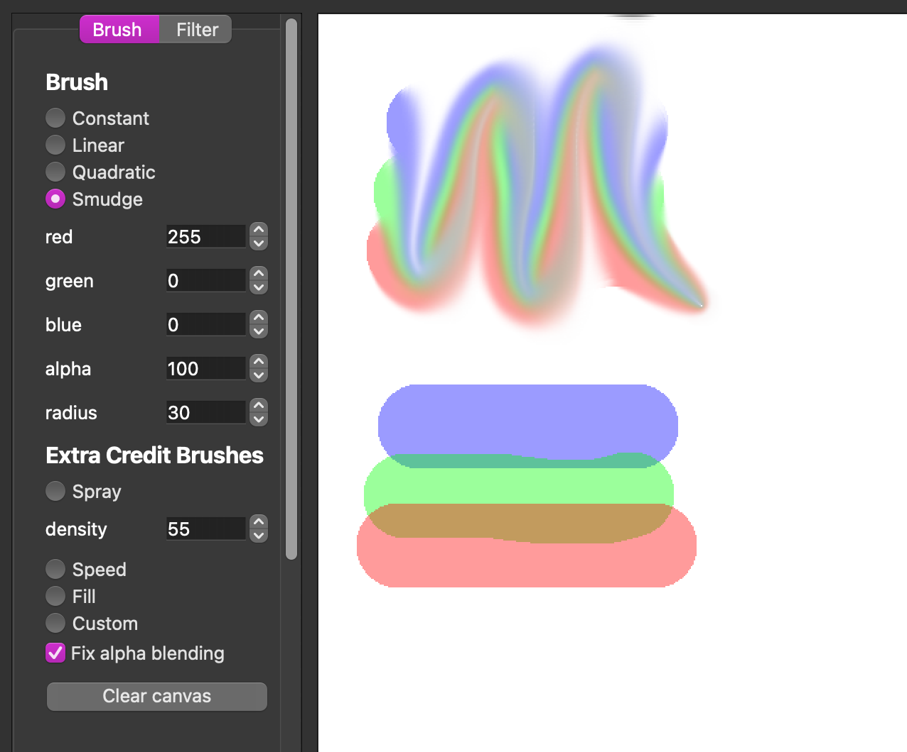
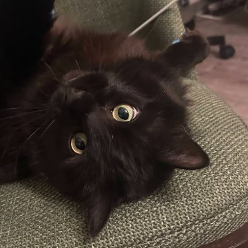

FEM
Deformable object simulation including force computation, time integration, and simple collision resolution.

XR GPU Driver Software Engineer · Qualcomm
I'm a software engineer on the Graphics Software XR team at Qualcomm, where I work on motion estimation. I graduated from Brown University in 2024 with an ScB in computer science, focusing on visual computing and security.
I'm also a photographer and a huge animal lover. There's more about me outside of work below!
Qualcomm · Graphics Software XR Team
After interning with Qualcomm's VR graphics team in 2022, I came back full time to the Graphics Software XR Team, where I work on the GPU driver side of XR graphics. Most of my work centers on the MotionEngine, estimating how content moves between rendered frames and using that motion to synthesize new frames, so gaming experiences can look smoother than what the application renders on its own.
Apple · Game Tech Team
I worked on an accessibility project for improving interactions with USD files in QuickLook and Preview. During my internship I collaborated with colleagues in different areas of the company to come up with user stories and features that would be important to add to the project. I worked in Objective-C to add features using the GCController framework.
Brown University · Computer Systems Security
I worked with TAs to improve assignments, as well as held office hours to help students with conceptual content questions, as well as creating exploits or debugging code.
Qualcomm · VR Team
During my time at Qualcomm I worked on two main projects. The first was writing a Python script to test an ML scene classification algorithm used to improve VR performance by toggling spacewarp on and off. I used FFmpeg to capture frames from different VR games to use as test cases. Within the Android test app, I created setprops to log difference hash values between frames, and used ImageMagick to create visual representations of the outputs.
The second project involved gathering representative frames from popular VR games to be used for streamlining performance testing. I used scopelogs as well as Renderdoc for Oculus to gather information on app workload, as well as to analyze trends in rendering strategies.
Brown XR Hub
Our project is a collaboration between the XR Hub and Design x Health to create an immersive experience to aid amputees experiencing phantom limb pain. The project involves using Unity to do hand tracking to visualize a phantom arm, fingers, or other ligaments that may have been amputated, and using the phantom limb to play interactive VR games. We plan to create immersive VR experiences that in the end will hopefully work to help reduce the effects of phantom limb pain.

Deformable object simulation including force computation, time integration, and simple collision resolution.

Processes an OBJ mesh into a half-edge data structure to support loop subdivision, quadric error simplification, and bilateral mesh denoising.

Physically based renderer supporting diffuse, glossy specular, mirror reflective, and refractive BRDFs, with direct + indirect lighting and Russian Roulette path termination.

Snowy Veggie Tales scene with a skybox, crepuscular rays, OBJ parsing, procedurally generated terrain, and bezier curves.
Repo
Automated feature matching, warping, and image stitching to create panoramas in Python.

Poisson blending of a source and target image according to a mask, plus videos blended frame by frame with the same technique.

Implementation of Debevec and Malik 1997 and Durand 2002 to recover radiance maps and apply local tone mapping.

Aligns three color channel exposure images with an image pyramid to create a final color image.

Raytracer supporting shadows, recursive reflections, and texture mapping.

Photoshop-like brushes and convolution-based image filtering.
Face landmark tracker that drives the cursor, to aid those with mobility issues who may not be able to reliably use a trackpad or mouse.
Dance and theater performances, a cappella concerts, portraits, and graduation sessions. Click any photo to see it larger.
Currently reading
Kristin Hannah
Game night picks
Currently watching
Volunteering

Pictured: my 15th foster cat who I couldn't give up, Spoon!